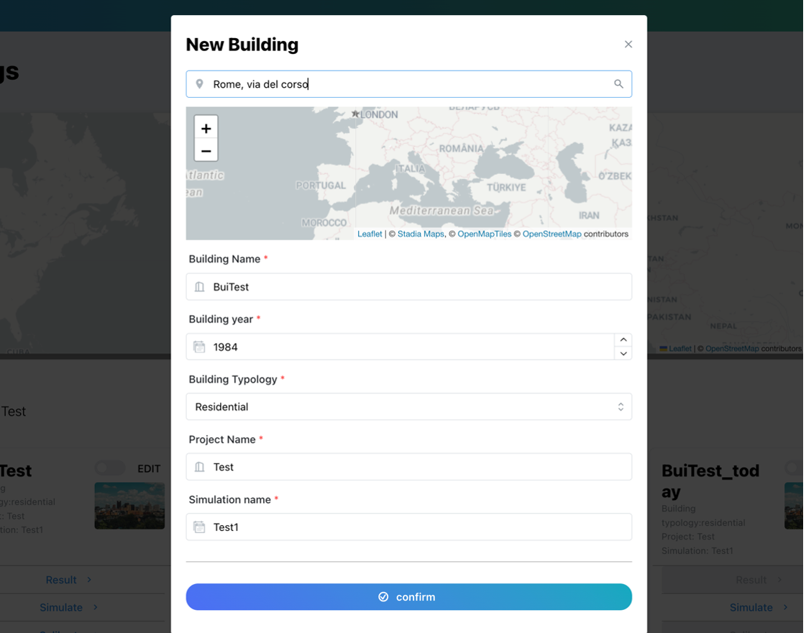
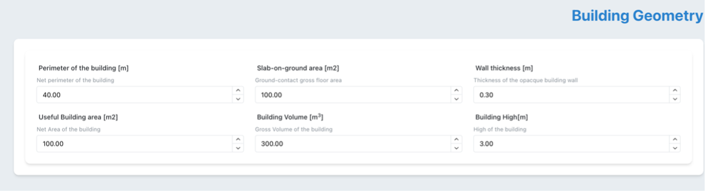
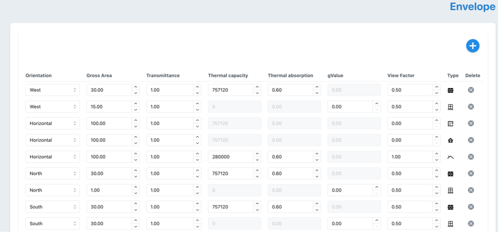
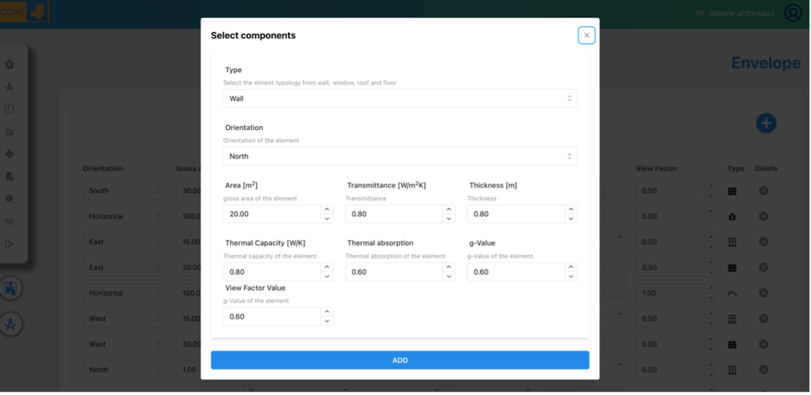
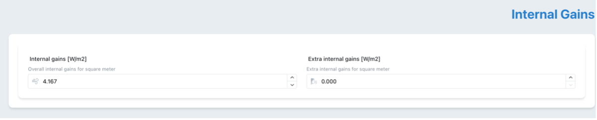
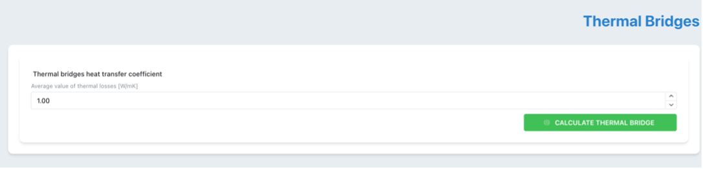
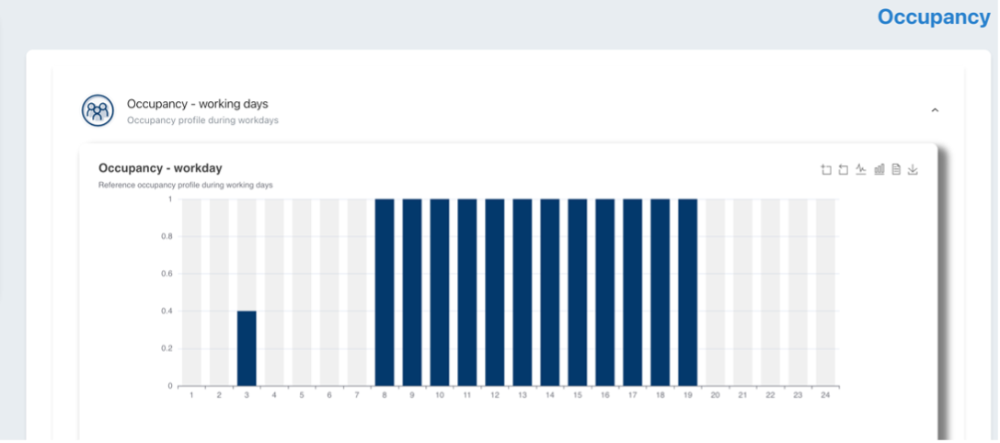
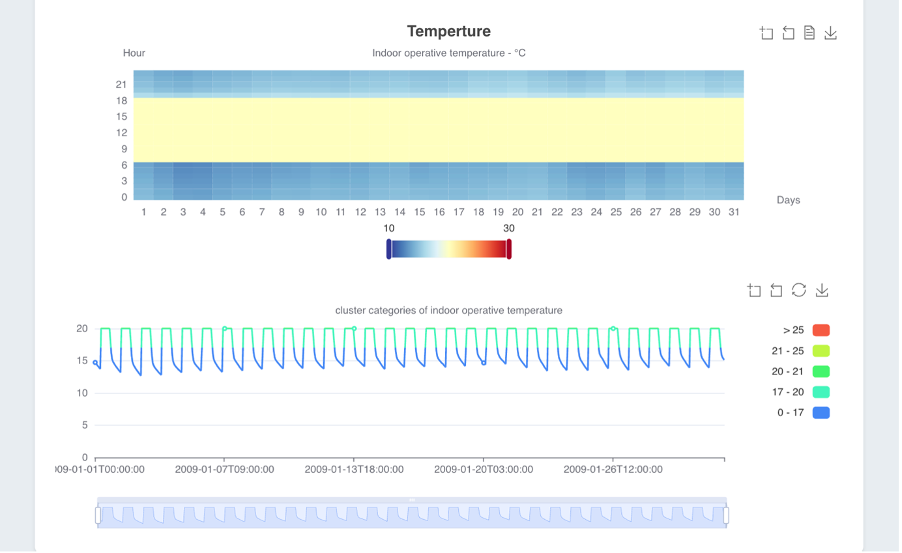
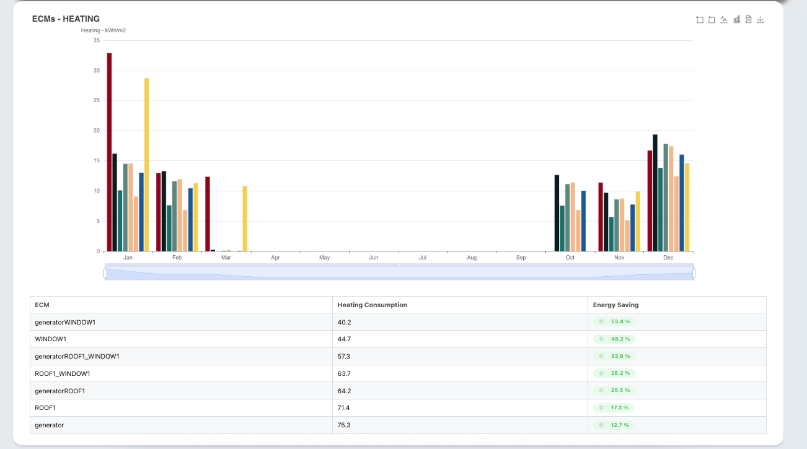
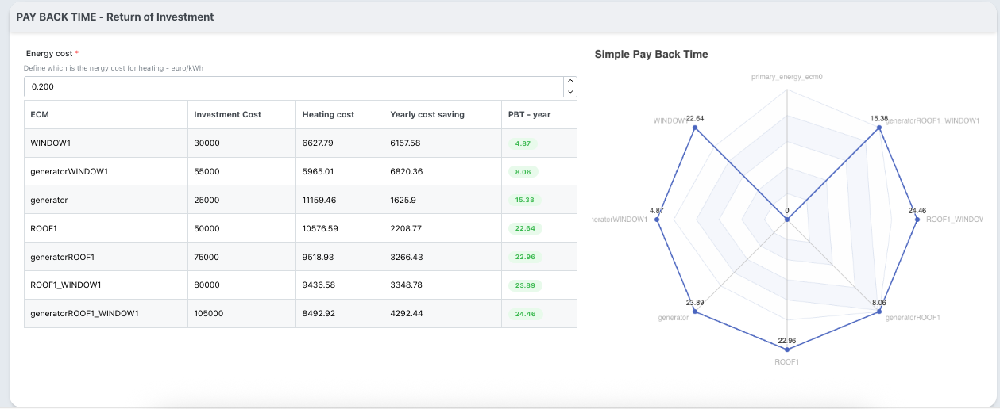

The Energy Conservation Tool is a comprehensive assessment platform that evaluates building energy performance improvements through Energy Conservation Measures (ECMs) using advanced EN ISO 52016/52010 standards. Built on the open-source pyBuildingEnergy library developed with HE Moderate, BuildON and Infinite projects, it provides semi-dynamic energy calculations with hourly resolution, surpassing traditional static methods used in energy certificates. The tool enables assessment of both building envelope measures (insulation, windows) and system improvements (HVAC, photovoltaics) through integration with the 2050 Materials database of market-available components. By transitioning from static to dynamic hourly calculations, it delivers unprecedented accuracy for evidence-based energy renovation planning. This comprehensive approach supports building professionals in making informed decisions for sustainable building transformations and strategic renovation investments
Introduction
ENCOME aims to assess improvements in the building's energy performance when energy improvement measures are implemented.
The tool starts with an evaluation of the building’s baseline through an energy simulation based on EN ISO 52016 and 52010 standards.
These standards, referenced for energy performance assessment in the revised EPBD, represent an improvement compared to the calculations applied in energy certificates. In fact, it shifts from a static calculation to a semi-dynamic calculation, where energy performance is evaluated not only on an annual and monthly basis but also on a daily and hourly basis. In this context, in collaboration with the HE BuildOn and H2020 Infinite and Moderate projects, the first open-source software library (pyBuildingEnergy) available to the community has been developed, enabling the calculation of the building’s energy demand for heating and cooling using EN ISO 52016 and 52010. Additionally, the calculation of domestic hot water has been added to provide a more detailed and comprehensive assessment, up to on hourly basis. This library serves as the calculation engine for the tool, through which various assessments are carried out, both initial (baseline) and virtually applying new ECMs (Energy Conservation Measures)to the building allowing for better planning of real ECM developments for that building. The applicable ECMs pertain not only to the building envelope but also to the building systems. For the envelope, it is possible to assess new opaque components by defining layers that characterize walls, floors, and roofs, while for the transparent part, new window components can be defined. For the systems, it is possible to define windows with improved performance. To achieve this, a database based on market-available construction materials, components and systems can be accessed by collaboration with the company 2050 Materials, or entered directly by the user. The ECMs that can be implemented also target the deployment of renewable energy sources. In fact, in a dedicated section, it is possible to simulate the performance of the building if a photovoltaic system were to be installed. To do this, it is assumed that the building’s thermal load is generated by an electric generator or heat pump, with the energy demand partially met by the photovoltaic system.
The tool is based on the following schema:
General schema of the ECM tool, including modular components localized for Italy, and interoperability with other MODERATE tools and models
User Guide
INPUT
To simulate the tool some inputs are required (similar to the ones required for the EPC certification):
Building location:
Weather information, such as external temperature and solar radiation, useful for simulating the building, is directly taken from the PVGIS, using the dedicated API and providing the latitude and longitude of the building as input. In the tool, this information can be provided either by directly selecting the building on the map or by typing the building's address in the dedicated space

Geolocation of the building
- Building information:
where the information provided during the building creation phase is displayed, such as building name, year of construction, type, project name, and simulation number
Geolocation of the building
Building geometry:
in this field, the geometric information of the building is provided, such as perimeter, area, volume, etc

Building geometry
Building envelope:
here the user is asked to enter information related to the envelope, both for the opaque and transparent components

List of facade elements (opaque and transparent)

Inputs to create a facade element
Building systems:
represent simplified information about the heating and cooling system. The user can provide either the efficiency of the different subsystems for the heating system or specify certain components such as radiators, radiant panels, or others for the emission system
Heating and Cooling systems inputs
Ventilation:
hourly air changes are required, as well as any extra air changes during the building's occupancy periods
Ventilation
Internal Gains:
these are internal gains that can vary in case of building occupancy, in which case a specific value must be provided

Internal Gains
Thermal bridges:
value of the heat transmission coefficient due to thermal bridge

Thermal Bridges input
Occupancy:
average occupancy profile of the building over 24 hours for weekdays and weekends

Occupancy input
Dedicated pages for material databases where it is possible to define layer compositions for vertical opaque components and display them in 3D
Custom component definition by layers
OUTPUT
it is possible to view the primary energy, the building's thermal demand, the internal temperature trends, also the temperature visualization according to the groupings provided by EN 16798-1
Primary and energy need of buildingDaily and hourly energy profile

Indoor Temperature profile and Temperature category from EN 16798-1
ENERGY CONSERVATION MEASURES
it is possible to apply different ECMs to the building and evaluate both economic and energy impact to the building.
The ECM can be applied to:
1) The facade, changing the layer composition of the vertical opaque components
2) The roof, changing the layer composition of the vertical opaque components
3) The floor, changing the layer composition of the vertical opaque components
4) The windows, changing the layer composition of the vertical transparent components
5) The heating system, changing the performance of the generator
The tool simulates each individual ECM as well as combinations of multiple ECMs, when more than one is selected. In the end, it is possible to evaluate both the energy impact and the economic impact, if the investment cost for the ECM and the energy cost per kWh are provided.
<figure markdown="span">
List of Simulated ECM

Energy impact of ECMs

Simple pay back time for each ECM
Photovoltaic simulation
Photovoltaic Simulation (ECM) and Optimization. Photovoltaics simulation allows the user to assess how much photovoltaics capacity is needed when the energy consumption for heating is covered entirely by an electric generator (heat pump), and additional data is required including i. e., an annual profile of electricity consumption from appliances. The optimization provides a guide for the design of a photovoltaic plus battery energy storage system coupled with a heat pump for different locations and thus different climates in Europe. Through a multi-objective optimization approach applied to the six European geoclusters and applying different solution selection criteria, it is possible to obtain the optimal photovoltaic capacity (kWp) normalized over the thermal consumption of a reference building and the optimal capacity of the battery per kWp of photovoltaic (kWh/kWp) installed. Due to the normalization process, results can be generalized and can be used for designing similar systems in all buildings around Europe. The results must be intended as a support for designers for the early-design phase of such systems or as an initial guess for an iterative process in more advanced evaluations